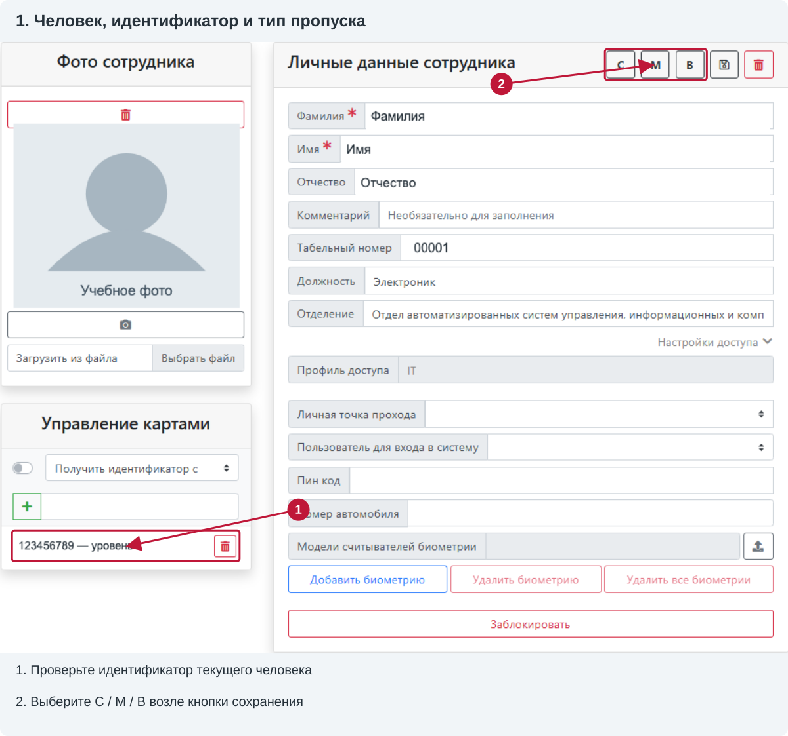
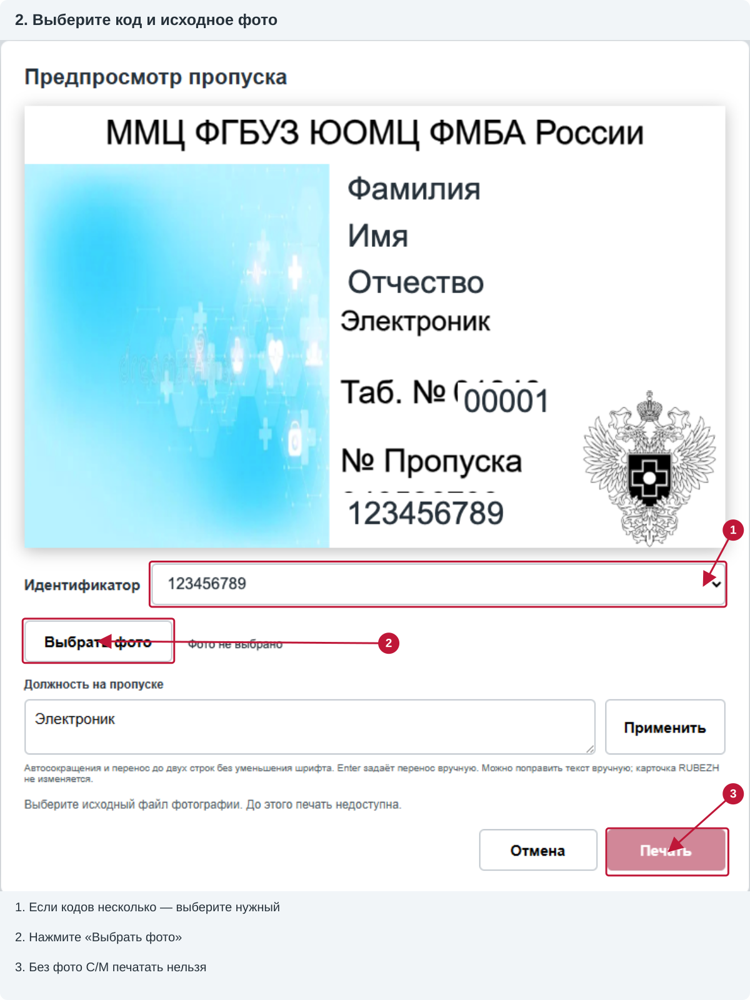
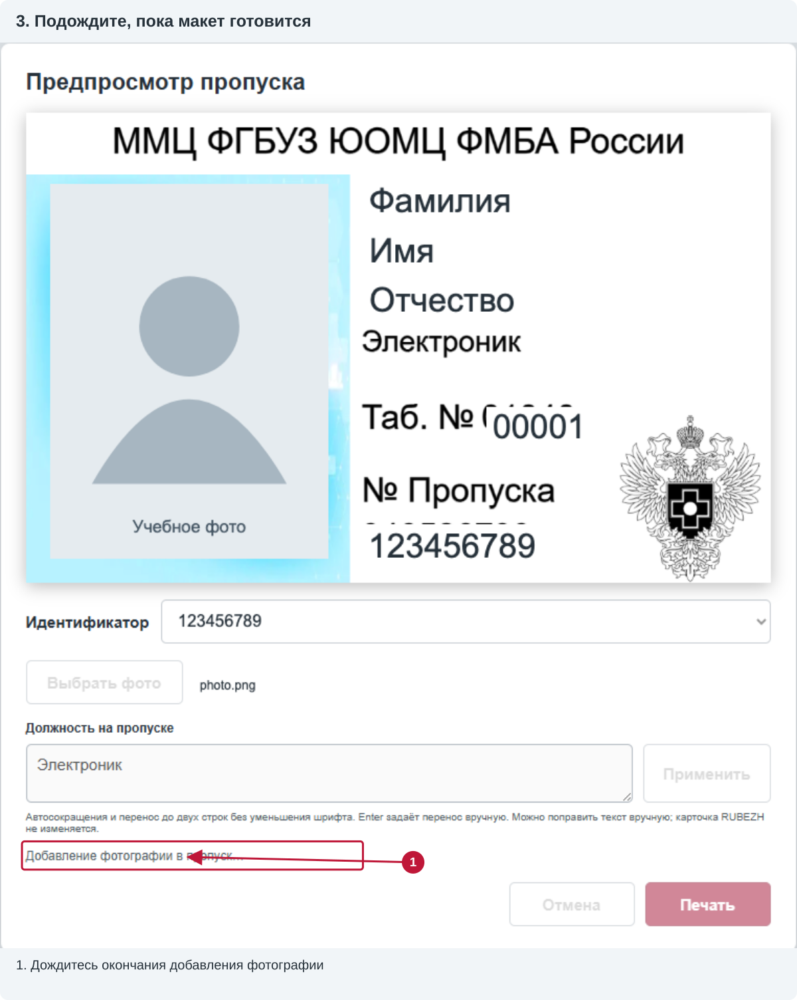
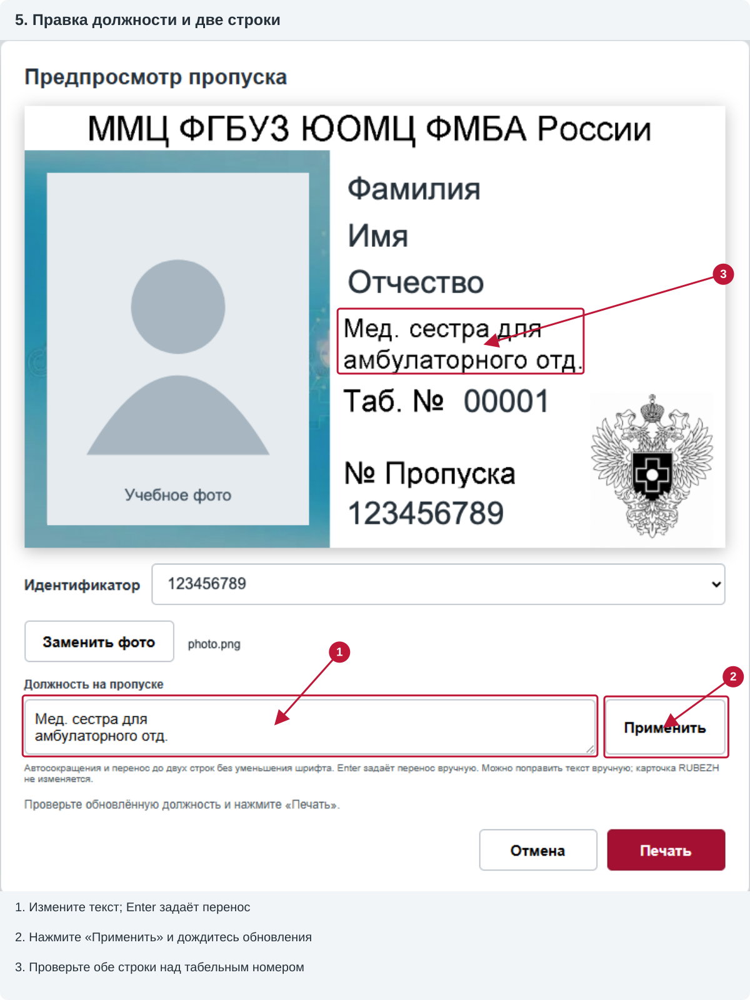
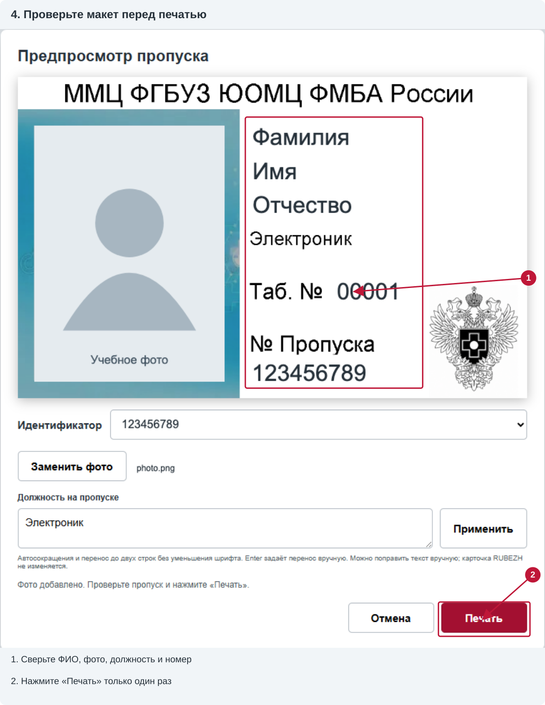

RUBEZH STRAZH · инструкция оператора · 2.8
Как подготовить и напечатать пропуск
Пять шагов: открыть человека → выбрать код и фото → дождаться макета → проверить текст → отправить одну печать.
Иллюстрации сделаны по присланным снимкам вашего интерфейса. ФИО, коды и портрет заменены учебными примерами. Красные рамки, стрелки и номера — подсказки, а не элементы программы.
Устанавливаете впервые? Откройте инструкцию по установке в Яндекс Браузер. Эта страница описывает ежедневную работу, не установку.
1. Откройте человека и выберите тип пропуска
- В RUBEZH откройте «Сотрудники» или «Посетители», найдите человека и откройте его карточку. Кнопки расширения находятся в карточке, не в общем списке.
- Проверьте ФИО и табельный номер. В блоке «Управление картами» должен быть нужный идентификатор. Если добавили код только что, дождитесь его появления в этом блоке.
- Нажмите С, М или В рядом с кнопкой сохранения. Откроется отдельное окно «Предпросмотр пропуска». Простое открытие окна не печатает карточку.

| Кнопка | Какой пропуск | Текст на карточке | Фото |
|---|---|---|---|
| С | Сотрудник | Должность и табельный номер | Обязательно |
| М | МОСН | Комментарий; если пустой — должность. Вместо табельного номера — МОСН | Обязательно |
| В | Временный | Макет временного пропуска | Не требуется |
2. Выберите идентификатор и исходный файл фотографии
- В поле «Идентификатор» выберите код для этого пропуска. Если код один, он выбран автоматически. Если несколько — напечатается только выбранный, не все сразу. Сверьте его с «Управлением картами» исходной карточки.
- Для С/М нажмите «Выбрать фото». В стандартном окне выбора файла найдите исходную обрезанную фотографию на компьютере и подтвердите выбор файла.
- Используйте JPG, PNG, WebP или BMP. Не выбирайте снимок бумажного/пластикового пропуска или скриншот фотографии из RUBEZH: нужен исходный файл.

После выбора файла системное окно закрывается, а в предпросмотре появляется фото. Изображение вписывается в область фотографии без растяжения, с обрезкой по центру. Проверьте, не срезаны ли лицо и волосы. При необходимости заранее исправьте обрезку исходного файла и выберите его повторно.
Для В: шаг выбора фото отсутствует. Проверьте код и макет временного пропуска и переходите к печати.
3. Дождитесь готового предпросмотра
Во время сообщения «Добавление фотографии в пропуск…» фото уже может быть видно, но подготовка ещё не завершена. Серые кнопки и поля в этот момент нормальны. Не нажимайте повторно, не закрывайте окно и дождитесь окончания.

Готовность: появляется имя выбранного файла, кнопка меняется на «Заменить фото», под полями видно сообщение «Фото добавлено. Проверьте пропуск и нажмите „Печать“», кнопка печати становится активной.
Окончательное изображение С/М строит SDK из CSD-шаблона. При подготовке макета команда печати не отправляется. Если вместо готовности появилось сообщение об ошибке, следуйте ему; не считайте промежуточную картинку подтверждением.
4. Проверьте должность или комментарий и при необходимости исправьте
У С поле называется «Должность на пропуске», у М — «Комментарий на пропуске МОСН». Изменения здесь действуют только на текущий макет: исходная должность/комментарий в RUBEZH не меняются.
- Посмотрите текст на карточке. Программа сокращает известные слова: «Оператор» → «Опер.», «Медицинская сестра» → «Мед. сестра», «Младшая» → «Млад.». Другие знакомые термины сокращаются при нехватке ширины.
- Если нужно, исправьте текст в поле под макетом. Enter задаёт перенос вручную. Поддерживаются две строки; вторая находится над «Таб. №» (для М — над МОСН). Для короткой должности второе поле пустое.
- Нажмите «Применить» и дождитесь обновления. После ввода изменений печать недоступна, пока правка не применена и новый макет не сформирован.
- Сверьте обе строки именно на обновлённой карточке, не только в поле ввода. Сохраните понятный смысл должности.

Пример: «Мед. сестра для» + следующая строка «амбулаторного отд.». Автоперенос идёт по пробелам или существующим дефисам, без уменьшения исходного шрифта. Неизвестные слова не обрезаются автоматически.
5. Проверьте карточку и отправьте одну печать

- Принтер должен быть готов, без сообщения об ошибке. Не отправляйте одновременно задания из расширения и iDesigner.
- Проверьте ФИО, фото, должность/комментарий, табельный номер и идентификатор. При неправильном макете сначала исправьте его; не делайте пробную печать заведомо неправильных данных.
- Нажмите «Печать» один раз. Пока показано «Печать на IDP SMART… Дождитесь завершения задания», элементы заблокированы. Не перезапускайте мост, браузер и установщик.
- Дождитесь сообщения о завершении и выдачи карточки. Проверьте фактический отпечаток: текст, эмблему, фото и правильный код. Сообщение SDK о завершении не заменяет этот осмотр.
- Если всё правильно, закройте окно и переходите к следующему человеку. Для нового пропуска откройте новый предпросмотр; повторные нажатия в уже отправленном окне не запускают ещё одно задание.
«Отмена» закрывает подготовку до отправки. Она не отменяет уже отправленное аппаратное задание. Кнопка Cancel на дисплее принтера и «Отмена» в окне расширения — разные действия.
Если что-то не получается
- Кнопок С/М/В нет
- Откройте именно карточку человека и нажмите Ctrl+R после установки/перезагрузки расширения. Проверьте адрес RUBEZH в «Настройках» расширения и что расширение включено.
- Не виден новый идентификатор / нет кодов
- Проверьте код в «Управлении картами» текущего человека. Список в предпросмотре проверяется автоматически и перед отправкой. При отсутствии кода печать блокируется; не вводите произвольный номер и не выбирайте код другого человека. Если обновления нет — сохраните сведения об ошибке, не обходите проверку.
- «Печать» серая
- Для С/М нужны идентификатор, исходное фото и завершённый макет. После изменения текста нажмите «Применить». При закрытой/сменённой исходной карточке печать также блокируется. Прочитайте сообщение под полями.
- Не удаётся выбрать фото
- Выберите исходный файл поддерживаемого формата. При ошибке загрузки/подготовки попробуйте корректный файл, а не повторную печать. Фото должно находиться на доступном диске.
- Мост недоступен / требуется обновление Print Bridge
- Установка и проверка связи описаны в инструкции по установке. Не переустанавливайте и не перезапускайте мост во время движения принтера.
- Печать не подтверждена / профиль драйвера не совпадает
- Не отправляйте карточку снова вслепую. Сохраните лог и сообщение, проверьте дисплей и фактический отпечаток. Мост не подменяет настройки автоматически.
- После Cancel не открывается следующий макет
- Дождитесь выдачи старой карточки и уберите её. Принтер должен остановиться, на дисплее не должно быть ошибки. Если в очереди Windows осталось задание, отмените его вручную. В окне расширения подтвердите это галочкой и нажмите «Проверить готовность после Cancel». Проверка только читает состояние и очередь: не печатает, не перематывает ленту и не меняет настройки. При оставшейся ошибке или занятом принтере блокировка не снимается. После успешной проверки старое отправленное задание не повторяется — закройте его окно и откройте новый пропуск. Если мост не поддерживает проверку, обновите комплект при остановленном принтере.
Как передать свежий лог
- Запомните время неудачной попытки и сохраните фото результата/дисплея.
- Нажмите Win+R, вставьте
%LOCALAPPDATA%\RubezhPrintBridge, нажмите Enter. - Найдите
bridge.logи скопируйте его для ответственного за поддержку. Не берите случайную старую копию из папки проекта и не удаляйте историю перед обращением. - Сообщите версию расширения, тип С/М/В, точное сообщение и выполнялась ли перед этим печать из iDesigner. Не пересылайте лишние персональные данные публично.